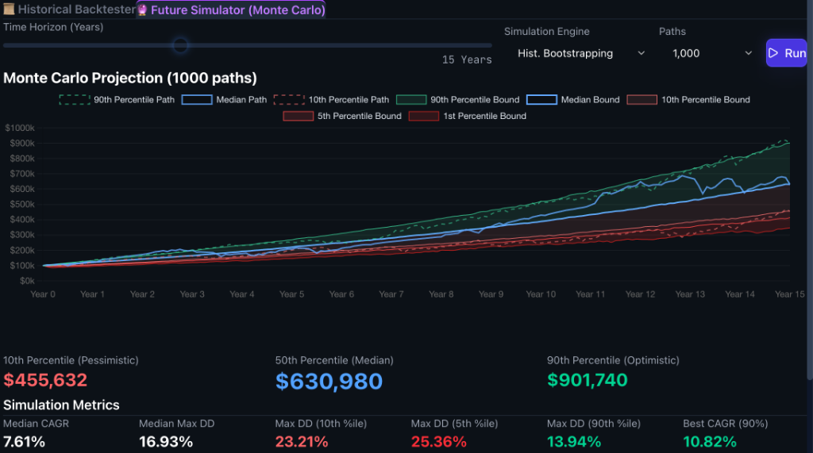

Selected Projects
Modeling Inhibitors Against SARS-CoV-2
Developed molecular dynamics simulations to evaluate SARS-CoV-2 inhibitors for antiviral drug design.
Read PaperAmyloid Beta Inhibitors
Dynamic simulation trajectories of Amyloid Beta inhibition processes.

Portfolio Management Tool
Developed a tool for testing portfolios based on different financial products such as ETFs and stocks.
Try it out
Credit Portfolio View
Developed and tested Credit Portfolio View, the enterprise-level credit risk management software for the Sparkassen Finance Group. Estimated credit risks utilizing Monte Carlo simulations and supported partner banks in portfolio analysis (SQL, VBA, C#).
Student Representative
Worked as a Student Representative at Studierendenwerk Berlin for an international student dormitory. Managed the dorm's bar and fostered community by organizing events such as group trips, parties, karaoke nights, and board game nights.
Volunteer Work in Peru
During high school, I successfully organized fundraising efforts in Germany to support a school in Peru, where I subsequently volunteered. This project centered around educational support, community building, and cross-cultural exchange.